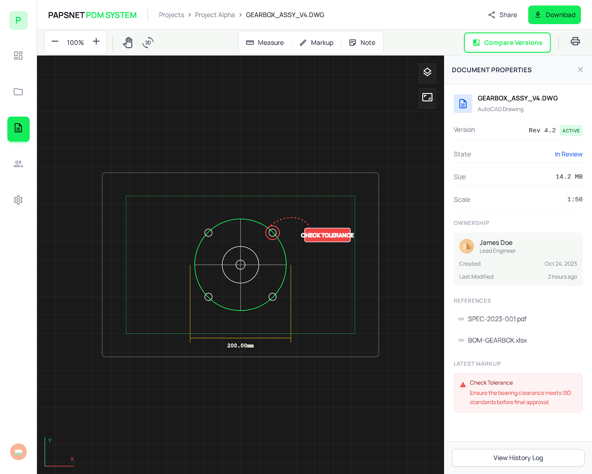
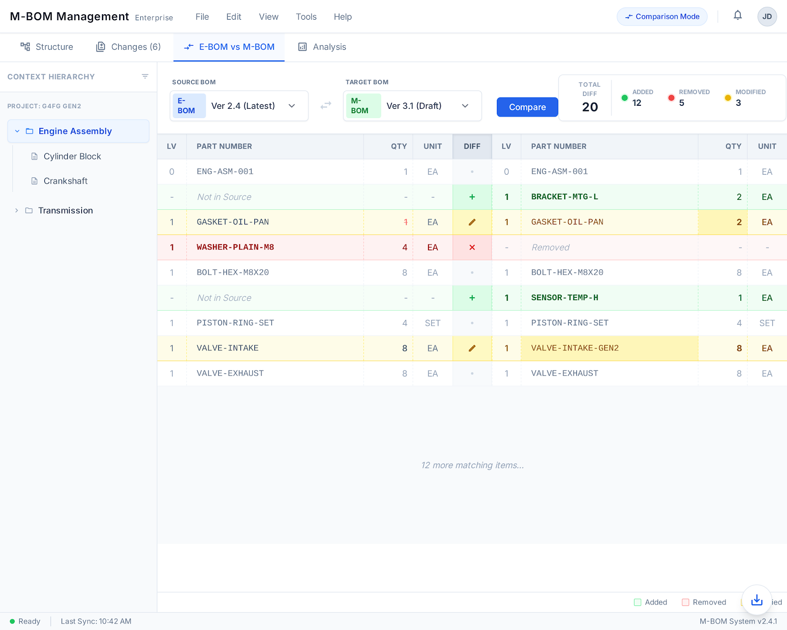
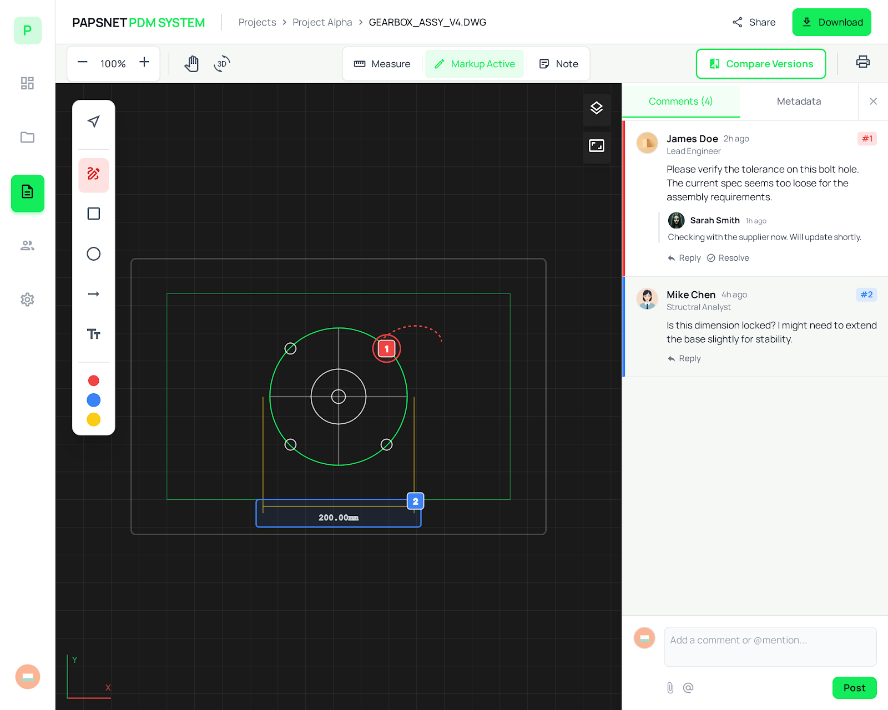
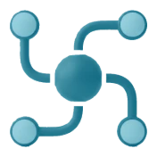
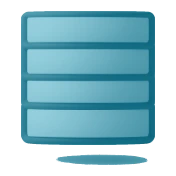

AI로 도면을
더 스마트하게
AI CADWin은 AutoCAD 환경에서 BOM 정보를 자동 추출하고, AI 기반 도면 검색·유사도 분석으로 수천 장의 도면에서 원하는 설계 정보를 즉시 찾아 재활용할 수 있는 AI 도면 자동화 솔루션입니다.
반복 작업을 AI로 자동화
도면 판독·BOM 추출까지, 설계를 더 빠르게
AI 도면 자동 검색
형상 인식으로 수천 장에서 유사 도면 즉시 검색.
BOM 자동 추출
도면 속성·테이블에서 부품 정보 자동 수집.
PDM 자동 동기화
Check-in/out으로 Clip PDM에 자동 동기화.
AutoCAD 리본 통합
AutoCAD 리본에서 PDM을 바로 실행.
SolidWorks 통합
SolidWorks Part·BOM·리비전을 원스톱 연계.
파생 파일 자동 생성
DWG·PDF·STEP 등 중립 포맷 자동 변환.
도면 업무를 바꾸는 상세 기능
AI 도면 검색, BOM 자동 수집, CAD 통합 프로세스를 실제 화면과 함께 소개합니다.
AI 기반
유사 도면 검색
팹스넷이 독자 개발한 AI 형상 인식 엔진이 수천 장의 도면 중에서 유사한 형상을 가진 도면을 자동으로 식별합니다. 벡터와 래스터 정보를 결합한 하이브리드 분석으로 검색 정확도를 높였습니다.
- 형상 기반 유사도 분석 — 수치적 유사도 점수 제공
- 스케치·이미지 기반 검색 지원
- 검색 결과 즉시 미리보기 및 속성 확인
- 기존 도면 재활용으로 신규 작도 작업을 줄입니다

도면에서 BOM
자동 수집 및 채번
AutoCAD 도면에서 부품 번호, 재질, 수량 등 BOM 정보를 자동으로 추출하고, 사내 표준 채번 규정(Numbering Rule)에 따라 부품 번호를 자동으로 부여합니다.
- 블록 속성 및 테이블 객체 자동 인식
- Enterprise 채번 규칙 적용 (자동 발번)
- PDM에서 ERP(SAP 등)로 BOM 자동 전송
- 품목 정보 정합성 검증

Ribbon 메뉴 탑재
원스톱 프로세스
CAD 소프트웨어 내에 Ribbon 메뉴 형태로 PDM 기능이 내장되어 있습니다. 별도의 프로그램 전환 없이 설계 환경에서 직접 Check-in/Check-out, 속성 동기화, 배포(Watermarking)를 수행할 수 있습니다.
- CAD 리본 메뉴에서 PDM 플러그인 직접 실행
- 도면 속성(Title Block) 양방향 동기화
- 변경사항 저장 시 버전 정보·메타데이터 자동 입력
- 배포 시 보안 워터마크 자동 적용

기술 사양
AI CADWin의 시스템 요구사항과 주요 기능 명세입니다.
지원 CAD 시스템
AutoCAD·SolidWorks 통합을 지원하며, 기타 CAD는 협의 후 연동합니다.

Clip PDM
ERP 연동AI 도면 자동화를 시작하세요
AI CADWin으로 반복 도면 작업을 줄이고, 기존 도면 자산을 재활용하세요.